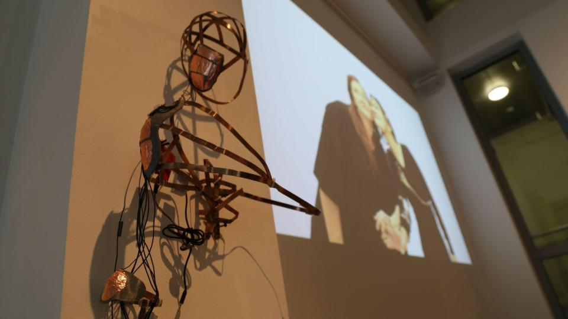
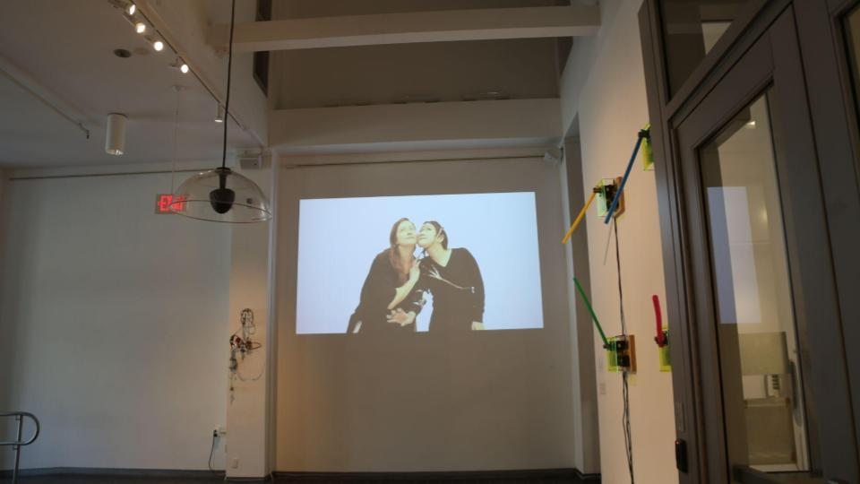
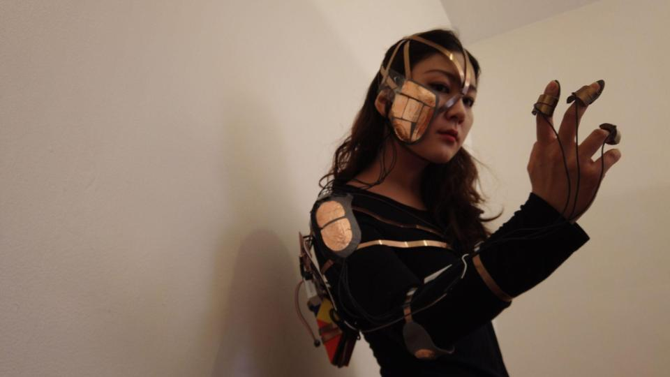
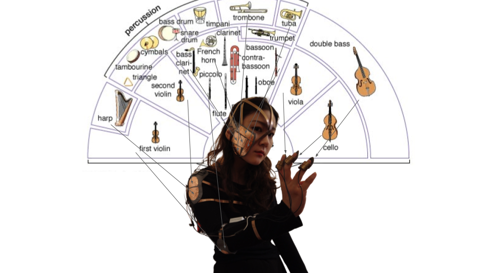
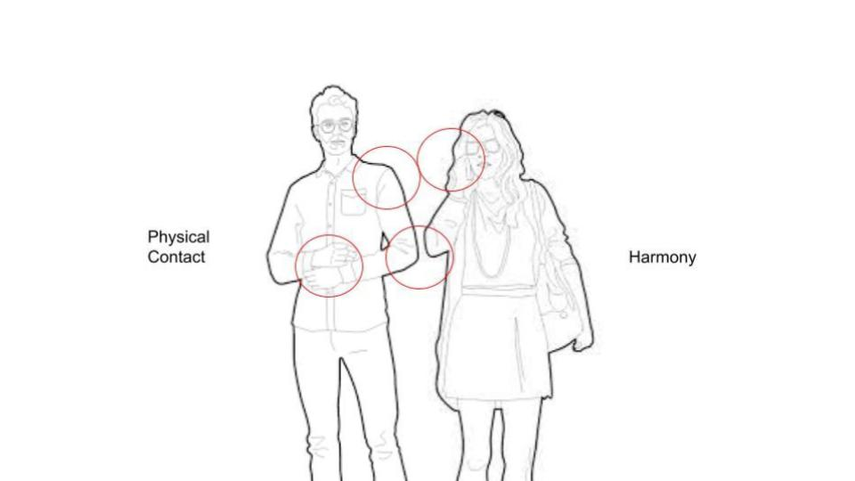
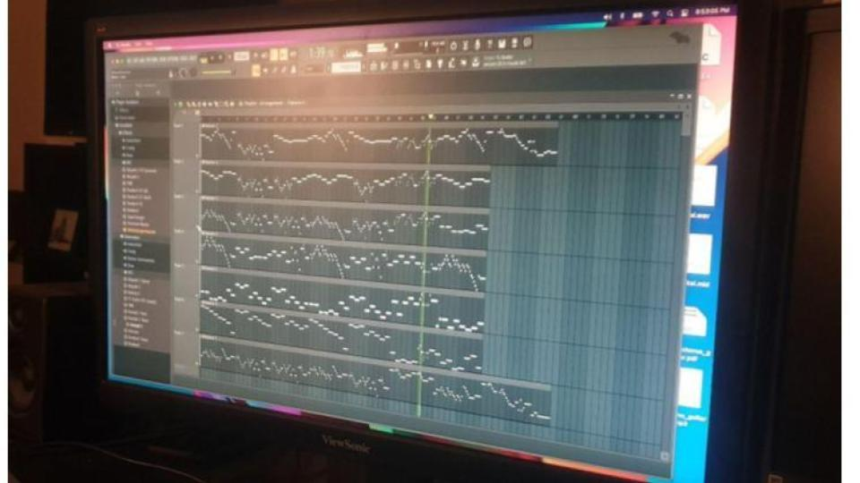
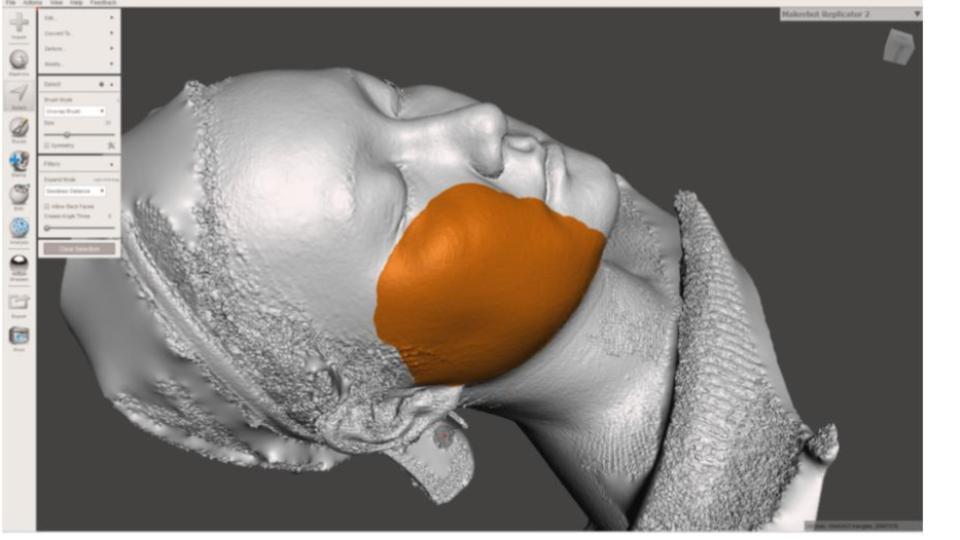

Body Orchestra
- Body Orchestra (2021)
- Exhibited at the Sol Koffler Gallery, RI & Boston Cyber Arts Gallery, Boston
- After more than two years of a pandemic, people are losing a sense of intimate relationships.
The sense of touch is blurred, and proximity is fading.
Social distancing forces people apart and makes people hesitate to get close to one other.
Therefore, I wanted to build something that evokes the feeling we are slowly forgetting.
I built a wearable gadget called ‘Body Orchestra,’
which helps two people to interact with each other physically
and helps them to experience the journey of building intimacy and fully being in the moment. -
"I was nervous whenever I encountered a new person to play the Body Orchestra.
However, as soon as the audience and I got closure and found our own pace,
we finally relaxed and started enjoying playing and harmonizing the music.
At the end of the play, we could feel a special bond and intimacy.
Every person I performed with was unique,
and the harmonies we created are amazingly colorful."
-
.png)
-
.png)
- 
- 
- 
- 
- 
- 
- 